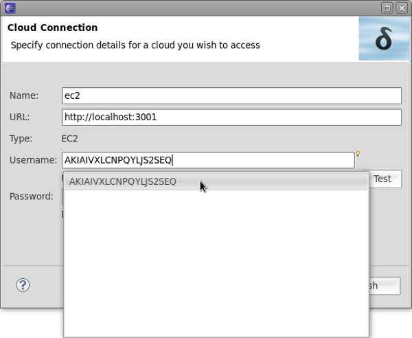
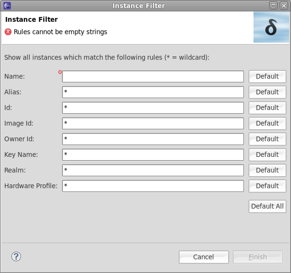
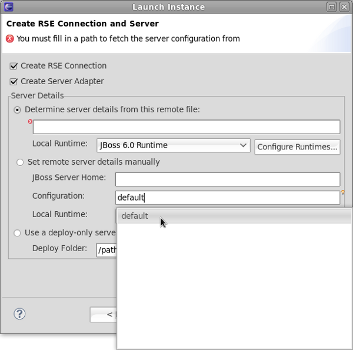

Deltacloud Tools
|
| Work done |
We fixed a lot of bugs and provided slight improvements of the tooling. Furthermore
we extracted the Deltacloud client component to its own bundle so that it may be used by any
java project that wants to communicate with the Deltacloud REST API.
|
Cloud Connection
|
| Content assist |
We added content assist to the fields in the cloud connection wizard. This will spare you from typing in many cases since
you can now choose among prior entries and reuse them.

|
Filter instances, filter images
|
| Bug fixes |
We fixed a lot of bugs that prevented filtering to be fully used in a reliable manner
|
| Error decorations |
Filter fields must contain valid filtering expressions. Invalid entries are now shown by error decorations
and messages in the dialog.

Related Jira
|
Launch instance wizard
|
| Error decorations, Content assist |
The second page in the wizard that allows you to launch an instance was enhanced UI-wise. It now offers content assist
and error decorations like all the other forms in Deltacloud tools.

Related Jira
|
Deltacloud client
|
| In its own plugin |
We finally extracted the Deltacloud client to its own plugin. Since OSGI bundles are basically
jar's on steroids there's nothing that would prevent classic java projects to use this client.
Our client would allow them to interact with the Deltacloud REST API.
The code is pretty mature and well tested.
Related Jira
|